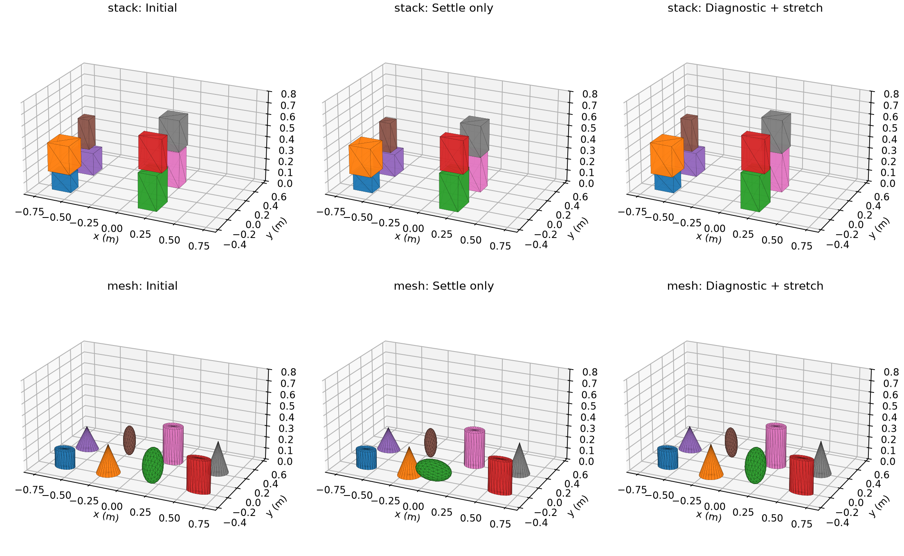

Independent implementations / Research in practice
Archive.
Every result has a scope.
Six papers, six local investigations. The evidence and the gaps, kept together.
From the paper.
Through the experiment.
Open to inspection.
CATALOGUED PROJECTS
ALL PARTIAL

No trained initializer

Components only
EXHIBITS / Local outputs, not original paper figures.Open the project files ↓
An implementation is a starting point. A reproduction claim needs a traceable experiment, a measured outcome, and a clear account of what remains unresolved.
The project files
01—06 / SELECT TO UNFOLD01Achieving Directional-Stationarity from a Single Random Direction Step
Partial reproduction · Public experiment scales run

01 / Implementation
REP exploration, DCA baselines, ReLU proximal models and stationarity diagnostics.
02 / Local validation
400 instances · 1,900 runs · all publicly reported experiment scales executed.
03 / Observed outcome
Trimmed Lasso: 99 wins / 1 tie / 0 losses, matching the reported count; overall numerical results still differ.
04 / Unresolved scope
Some counts match; overall numerical results differ. Several original settings remain unspecified.
02Quadratic Bezier Splatting with Structural Initialization for Efficient Painting Rendering
Partial reproduction · Core + local experiments
01 / Implementation
Analytic Bézier rendering, stroke auditing, adaptive optimization and initializer architecture.
02 / Local validation
Three-image, three-seed paired pilot · 18 runs · CPU/MPS numerical checks.
03 / Observed outcome
Stroke auditing: +0.2309 dB mean paired PSNR across 9 pairs; 8 improve and 1 declines.
04 / Unresolved scope
No completed learned-initializer training, full benchmark or paper-equivalent CUDA speedup.
03KoalaGS: Complexity-Aware Continuous Level of Detail for Gaussian Splatting
Partial reproduction · Core + local experiments

01 / Implementation
Complexity-aware relocation, prefix training, variance regularization and SH3 rendering.
02 / Local validation
Two local experiment rounds · 12 expanded training runs · CPU/MPS checks.
03 / Observed outcome
SH3 vs SH0: +1.102 PSNR AUC. KoalaGS vs prefix: +0.040 on average, two seeds win and one loses.
04 / Unresolved scope
Small-scale Lego evaluation; relative prefix-baseline advantage is not consistent across seeds.
04PhySPRING: Structure-Preserving Reduction of Physics-Informed Twins via GNN
Partial reproduction · Core + local experiments

01 / Implementation
Hierarchical GNN reduction, mechanical projection, frozen topology and differentiable rollouts.
02 / Local validation
Three local rounds · 18 latest real-subset runs · force/gradient and replay audits.
03 / Observed outcome
Local learned L3: 27.08 ± 0.79 mm future observation error; independent tracks still favor geometry.
04 / Unresolved scope
One cloth subset; independent tracks still favor geometry. Full paper benchmarks remain incomplete.
05MatrixSplat: Matrix-Parallel and Feature-Scalable 3D Gaussian Splatting Rendering on GPUs
Partial reproduction · Components + local experiments

01 / Implementation
Weighted matrix rendering, tiled accumulation, channel slicing and differentiable projection.
02 / Local validation
Five local cycles · five training seeds · 144 final GPU benchmark configurations.
03 / Observed outcome
Held-out RGB PSNR: 10.66 → 33.21 dB across 5 synthetic training seeds. 144 GPU timing configurations.
04 / Unresolved scope
No NVIDIA kernel, official datasets or paper-equivalent speed comparisons.
06SimuScene: Simulation-Ready Compositional 3D Scene Reconstruction from a Single Image
Partial reproduction · Components + local experiments
01 / Implementation
Sequential placement, penetration correction, gravity diagnostics and attachment constraints.
02 / Local validation
Five local cycles · 64 seeds · eight scene families · 2,048 final synthetic runs.
03 / Observed outcome
Synthetic stack IoU: 0.89443 → 0.99660. Pose-only errors worsen; severe cases remain unresolved.
04 / Unresolved scope
Geometry/physics components only; no complete image-to-scene pipeline or original benchmarks.
Evidence ledger
RECORDS / 16 NOV 2026The public reports below are pinned to the recorded repository commits. Follow the file to inspect the underlying evidence.
All six projects are partial reproductions. Local experiment counts describe different scopes and must not be added together or treated as comparable benchmarks.
| Project file | Status | Evidence / immutable snapshot | Commit / recorded |
|---|---|---|---|
| 01Directional Stationarity | Partial | results/report-v2/summary.json ↗docs/comparison.md ↗ | 4f3e374 ↗2026-11-16 |
| 02Quadratic Bézier Splatting | Partial | results/pilot_summary.csv ↗docs/results.md ↗ | ccd939e ↗2026-11-16 |
| 03KoalaGS | Partial | results/expanded_report/summary.json ↗results/expanded_report/results.md ↗ | c716669 ↗2026-11-16 |
| 04PhySPRING | Partial | results/round3/results.md ↗results/round3/sparse_gt.json ↗ | 11bf381 ↗2026-11-16 |
| 05MatrixSplat | Partial | results/round05/REPORT.md ↗COVERAGE.md ↗ | 2229a81 ↗2026-11-16 |
| 06SimuScene | Partial | results/round05/REPORT.md ↗COVERAGE.md ↗ | 3ebf35b ↗2026-11-16 |
File links preserve the recorded commit. SHA-256 digests are retained in the collection data; report links in the project files follow the current main branch.